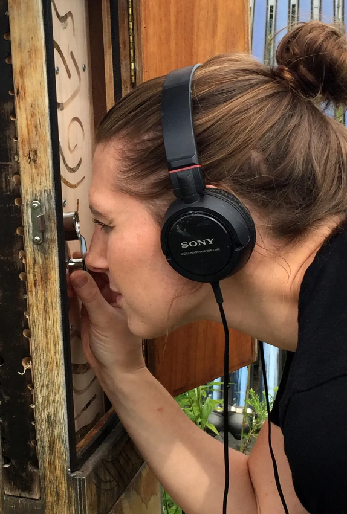

Pollination Ecologist
My work sits at the intersection of ecology, fieldwork, and community building.
My research focuses on wild bees in temperate forests — exploring how landscape, habitat, and biodiversity shape pollinator communities. I'm drawn to questions that connect species to the ecosystems around them.
I love facilitating workshops and making complex ideas accessible to people across different backgrounds. Whether it's field methods or data skills, I focus on connecting research to real, practical challenges.
I'm always looking for new ways to connect people and ideas. If you want to collaborate or just chat, feel free to reach out.
Get in touch →